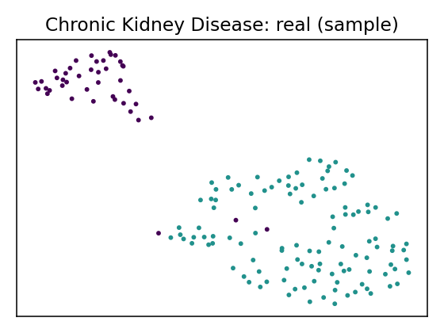

Data Report — Chronic Kidney Disease
Source: UCI dataset 336
- Metadata file: metadata.json
- JSON-LD (schema.org/Dataset): dataset.json
- SemMap JSON-LD: dataset.semmap.json
- SemMap HTML: dataset.semmap.html
- Rows: 158
- Columns: 25
- Discrete: 11 | Continuous: 14
Dataset metadata
- Name: Chronic Kidney Disease (UCI id 336)
Description
Clinical records for early detection of CKD (subset of variables mapped).
- Links:
- URL: https://archive.ics.uci.edu/dataset/336
Variables and summary
| variable | description | inferred | declared | count | unique | top | freq | mean | std | min | 25% | 50% | 75% | max |
|---|---|---|---|---|---|---|---|---|---|---|---|---|---|---|
| age | continuous | Integer | 391 | 51.48337595907928 | 17.16971408926224 | 2.0 | 42.0 | 55.0 | 64.5 | 90.0 | ||||
| bp | blood pressure | continuous | Integer | 388 | 76.46907216494846 | 13.68363749352526 | 50.0 | 70.0 | 80.0 | 80.0 | 180.0 | |||
| sg | specific gravity | continuous | Categorical | 353 | 1.0174079320113314 | 0.0057166169743763555 | 1.005 | 1.01 | 1.02 | 1.02 | 1.025 | |||
| al | albumin | continuous | Categorical | 354 | 1.0169491525423728 | 1.3526789127628456 | 0.0 | 0.0 | 0.0 | 2.0 | 5.0 | |||
| su | sugar | continuous | Categorical | 351 | 0.45014245014245013 | 1.099191251885407 | 0.0 | 0.0 | 0.0 | 0.0 | 5.0 | |||
| rbc | red blood cells | discrete | Binary | 248 | 2 | normal | 201 | |||||||
| pc | pus cell | discrete | Binary | 335 | 2 | normal | 259 | |||||||
| pcc | pus cell clumps | discrete | Binary | 396 | 2 | notpresent | 354 | |||||||
| ba | bacteria | discrete | Binary | 396 | 2 | notpresent | 374 | |||||||
| bgr | blood glucose random | continuous | Integer | 356 | 148.0365168539326 | 79.28171423511773 | 22.0 | 99.0 | 121.0 | 163.0 | 490.0 | |||
| bu | blood urea | continuous | Integer | 381 | 57.425721784776904 | 50.50300584922251 | 1.5 | 27.0 | 42.0 | 66.0 | 391.0 | |||
| sc | serum creatinine | continuous | Continuous | 383 | 3.072454308093995 | 5.741126066859788 | 0.4 | 0.9 | 1.3 | 2.8 | 76.0 | |||
| sod | sodium | continuous | Integer | 313 | 137.52875399361022 | 10.40875205179878 | 4.5 | 135.0 | 138.0 | 142.0 | 163.0 | |||
| pot | potassium | continuous | Continuous | 312 | 4.62724358974359 | 3.193904176556695 | 2.5 | 3.8 | 4.4 | 4.9 | 47.0 | |||
| hemo | hemoglobin | continuous | Continuous | 348 | 12.526436781609195 | 2.9125866088267642 | 3.1 | 10.3 | 12.649999999999999 | 15.0 | 17.8 | |||
| pcv | packed cell volume | continuous | Integer | 329 | 38.88449848024316 | 8.990104814740937 | 9.0 | 32.0 | 40.0 | 45.0 | 54.0 | |||
| wbcc | white blood cell count | continuous | Integer | 294 | 8406.122448979591 | 2944.4741904103385 | 2200.0 | 6500.0 | 8000.0 | 9800.0 | 26400.0 | |||
| rbcc | red blood cell count | continuous | Continuous | 269 | 4.707434944237917 | 1.0253232655721793 | 2.1 | 3.9 | 4.8 | 5.4 | 8.0 | |||
| htn | hypertension | discrete | Binary | 398 | 2 | no | 251 | |||||||
| dm | diabetes mellitus | discrete | Binary | 398 | 3 | no | 260 | |||||||
| cad | coronary artery disease | discrete | Binary | 398 | 2 | no | 364 | |||||||
| appet | appetite | discrete | Binary | 399 | 2 | good | 317 | |||||||
| pe | pedal edema | discrete | Binary | 399 | 2 | no | 323 | |||||||
| ane | anemia | discrete | Binary | 399 | 2 | no | 339 | |||||||
| class | ckd or not ckd | discrete | Binary | 400 | 3 | ckd | 248 |
Models
| name | backend | rows | seed | disc_jsd_mean | disc_jsd_median | cont_ks_mean | cont_w1_mean |
|---|---|---|---|---|---|---|---|
| clg_mi2 | pybnesian | 126 | 42 | 0.0527743 | 0.0410949 | 0.237883 | 50.3258 |
| semi_mi5 | pybnesian | 126 | 42 | 0.0562488 | 0.0502076 | 0.230761 | 49.1601 |
Model: clg_mi2 (pybnesian)
- Seed: 42
- Rows: 126
- Params:
{"max_indegree": 2, "operators": ["arcs"], "score": "bic", "type": "clg"} - Metrics: disc_jsd_mean=0.0528, disc_jsd_median=0.0411, cont_ks_mean=0.2379, cont_w1_mean=50.3258
- Synthetic CSV: models/clg_mi2/synthetic.csv
- Per-variable metrics: models/clg_mi2/per_variable_metrics.csv
- Metrics JSON: models/clg_mi2/metrics.json
Model: semi_mi5 (pybnesian)
- Seed: 42
- Rows: 126
- Params:
{"max_indegree": 5, "operators": ["arcs"], "score": "bic", "type": "semiparametric"} - Metrics: disc_jsd_mean=0.0562, disc_jsd_median=0.0502, cont_ks_mean=0.2308, cont_w1_mean=49.1601
- Synthetic CSV: models/semi_mi5/synthetic.csv
- Per-variable metrics: models/semi_mi5/per_variable_metrics.csv
- Metrics JSON: models/semi_mi5/metrics.json
MetaSyn GMF: metasyn_gmf.json
MetaSyn serialization
- Synthetic sample (SemMap Parquet): synthetic_metasyn.semmap.parquet
Fidelity (MetaSyn)
| model | disc_jsd_mean | disc_jsd_median | cont_ks_mean | cont_w1_mean |
|---|---|---|---|---|
| MetaSyn | 0.0413 | 0.0514 | 0.2994 | 43.1021 |
UMAP overview (same projection)
| Real (sample) | MetaSyn (synthetic) |
|---|---|
|  |  |